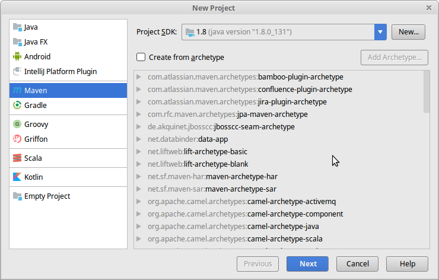
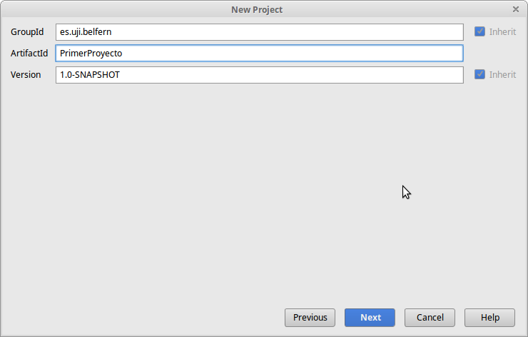
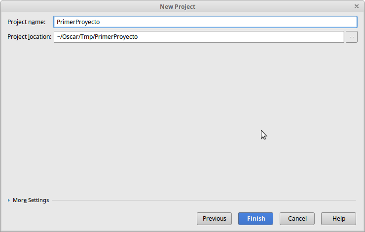
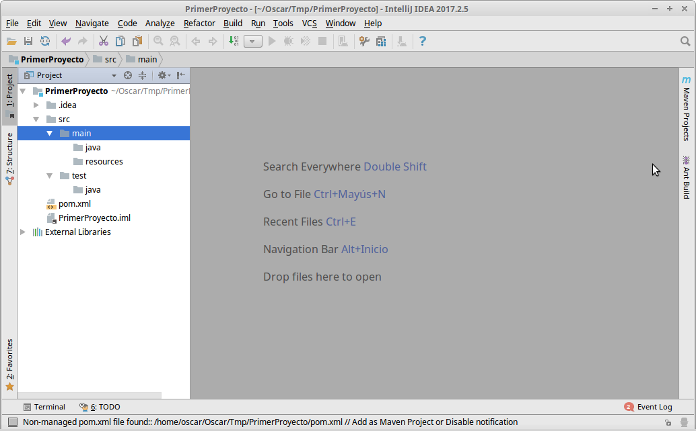
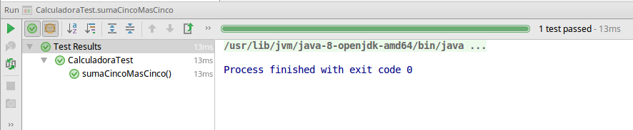
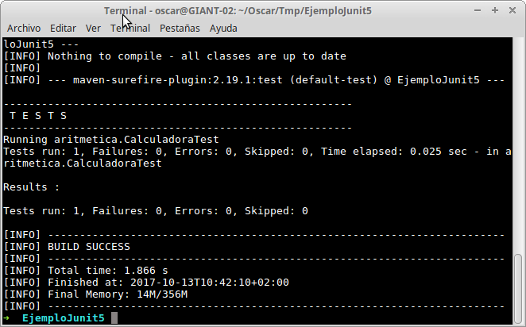
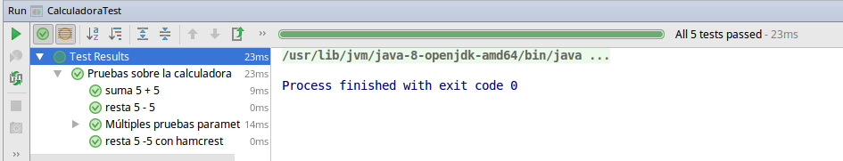
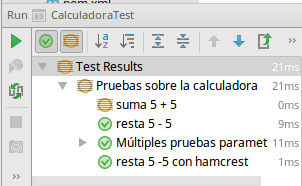
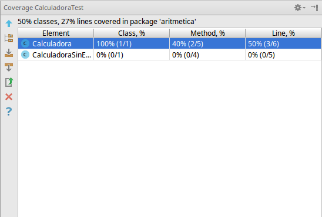

Asegurar la calidad del software es un requerimiento transversal en todo proyecto de desarrollo.
La calidad del software se comprueba mediante la realización de pruebas sobre este.
En esta primera práctica veremos el primer paso hacia la calidad del software: las pruebas unitarias.
Pero antes de ello, vamos a ver una herramienta para la construcción de proyectos en Java muy potente llamada Maven.
Libros:
Recursos en la web
¿Por qué necesitamos un herramienta de construcción de proyectos?
Piensa en las etapas las tareas típicas durante la creación de un proyecto software:
Apache Maven nos permite automatizar estas tareas.
Definimos, de modo declarativo, lo que necesitamos (dependencias) en nuestro proyeto, y luego lanzamos las tareas maven adecuadas (plugins).
Construyamos nuestro primer proyecto con Maven: File → New → Project:
Selecciona la casilla Create a simple project:
Ahora debes introducir Group Id y Artifact Id. El primero es el nombre el paquete base, el segundo el nombre de tu proyecto:
Este es el aspecto final del proyecto:
En el fichero pom.xml se encuentra la descripción de tu proyecto. De momento no hay mucho, pero en breve verás como añadir una nueva biblioteca para que forma parte de tu proyecto.
Las pruebas unitarias pretenden probar el comportamiento correcto las clases de manera aislada.
Esto significa que se prueba la clase aislándola de su interacción con otras clases.
F: Fast, los test se han de ejecutar rápidamente.
I: Isolated, los test se realizan sobre una clase sin interacción con otras.
R: Repeatable, el orden de ejecución de los test no debe influir en el resultado final.
S: Self-validating, los test se han de ejecutar de modo automático.
T: Timely, se han de crear al mismo tiempo que el software que se está creando.
Existen frameworks para realizar pruebas unitarias para prácticamente lenguaje de programación.
En el caso de Java podemos incluso elegir entre varias opciones.
Una de ellas es JUnit, puede que la más consolidada.
JUnit este es el enlace a la principal de este framework.
Para utilizar JUnit 5, debes añadir las siguientes dependencias:
<dependency>
<groupId>org.JUnit.jupiter</groupId>
<artifactId>JUnit-jupiter-api</artifactId>
<version>${JUnit.jupiter.version}</version>
<scope>test</scope>
</dependency>
<dependency>
<groupId>org.hamcrest</groupId>
<artifactId>hamcrest-core</artifactId>
<version>${hamcrest.version}</version>
</dependency>
Con las versiones adecuadas:
<jupiter.version>5.0.1</JUnit.jupiter.version>
<version>1.3</hamcrest.version>
También veremos cómo ejecutar las pruebas con Maven, para ello, necesitamos el siguiente plugin:
<plugin>
<groupId>org.apache.maven.plugins</groupId>
<artifactId>maven-surefire-plugin</artifactId>
<version>2.19.1</version>
<dependencies>
<dependency>
<groupId>org.JUnit.platform</groupId>
<artifactId>JUnit-platform-surefire-provider</artifactId>
<version>1.0.1</version>
</dependency>
<dependency>
<groupId>org.JUnit.jupiter</groupId>
<artifactId>JUnit-jupiter-engine</artifactId>
<version>5.0.1</version>
</dependency>
</dependencies>
</plugin>
Supón que quieres probar la siguiente clase.
public class Calculadora {
private double ultimoResultado;
public double suma(double primerSumando, double segundoSumando) {
return ultimoResultado = primerSumando + segundoSumando;
}
public double resta(double minuendo, double sustraendo) {
return ultimoResultado = minuendo - sustraendo;
}
public double multiplicacion(double primerFactor, double segundoFactor) {
return ultimoResultado = primerFactor * segundoFactor;
}
public double division(double dividendo, double divisor) {
return ultimoResultado = dividendo / divisor;
}
public double getUltimaResultado() {
return ultimoResultado;
}
}
En la ruta src/test/java crea la clase aritmetica.Calculadora
JUnit nos exige que un método de prueba sea público, no debe devolver ningún valor (void) y su lista de argumentos debe estar vacía.
@Test
public void testSuma() {
fail("Not yet implemented");
}
Ahora sí, escribamos la primera prueba:
public class CalculadoraTest {
@Test
public void sumaCincoMasCinco() {
Calculadora calculadora = new Calculadora();
assertEquals(10, calculadora.suma(5, 5));
}
}
La prueba pasa.
Para ejecutar las pruebas con Maven:
mvn test, y el resultado:
Si escribimos una prueba para probar el método de resta:
public class CalculadoraTest {
@Test
public void sumaCincoMasCinco() {
Calculadora calculadora = new Calculadora();
assertEquals(10, calculadora.suma(5, 5));
}
@Test
public void restaCincoMenosCinco() {
Calculadora calculadora = new Calculadora();
assertEquals(0, calculadora.resta(5, 5));
}
}
Te darás cuenta de que empezamos a tener código repetido, la instanciación de la clase Calculadora.
Usemos la etiqueta @BeforeEach:
public class CalculadoraTest {
private Calculadora calculadora;
@BeforeEach
public void creaCalculadora() {
calculadora = new Calculadora();
}
@Test
public void sumaCincoMasCinco() {
assertEquals(10, calculadora.suma(5, 5));
}
@Test
public void restaCincoMenosCinco() {
assertEquals(0, calculadora.resta(5, 5));
}
}
El método anotado con @BeforeEach se ejecuta antes de cada uno de los métodos anotados con @Test.
Del mismo modo, con la etiqueta @AfterEach etiquetamos los métodos que queremos que se ejecuten despúes de cada una de las pruebas:
@BeforeEach
public void creaCalculadora() {
calculadora = new Calculadora();
}
@AfterEach
public void eliminaCalculadora() {
calculadora = null;
}
Con ello conseguimos que el resultado de nuestras pruebas sea Independiente del resto de pruebas.
Fíjate que:
Si nuestra clase no tuviese estado:
public class CalculadoraSinEstado {
public double suma(double primerSumando, double segundoSumando) {
return primerSumando + segundoSumando;
}
public double resta(double minuendo, double sustraendo) {
return minuendo - sustraendo;
}
public double multiplicacion(double primerFactor,
double segundoFactor) {
return primerFactor * segundoFactor;
}
public double division(double dividendo, double divisor) {
return dividendo / divisor;
}
}
Sólo necesitaríamos crear la instancia de Calculadora una única vez, antes de ejecutar las pruebas, y eliminar la instancia una única vez, al acabar las pruebas.
Esto lo coseguimos con las etiquetas @BeforeAll y @AfterAll:
public class CalculadoraSinEstadoTest {
private static Calculadora calculadora;
@BeforeAll
public static void creaCalculadora() {
calculadora = new Calculadora();
}
@AfterAll
public static void eliminaCalculadora() {
calculadora = null;
}
@Test
public void sumaCincoMasCinco() {
assertEquals(10, calculadora.suma(5, 5));
}
@Test
public void restaCincoMenosCinco() {
assertEquals(0, calculadora.resta(5, 5));
}
}
Fíjate que los métodos etiquetados deben ser static.
Cuando usamos las etiqueteas @BeforeAll y @AfterAll:
Con JUnit 5, lanzar la ejecución de una prueba, se crea una nueva instancia de la clase cada vez que se ejecuta un método etiquetado con @Test. Con ello se aísla completamente la ejecución de métodos de prueba distintos.
Sin embargo, podemos forzar que no se cree un nuevo objeto por cada ejecución de un método de prueba añadiendo la etiqueta @TestInstance(TestInstance.Lifecycle.PER_CLASS) a la definición de la clase de prueba. En este caso, no es necesario que los métodos etiquetados con @BeforeAll o @AfterAll sean estáticos.
Puedes encontrar el detalle completa en la documentación de JUnit 5.
La biblioteca Hamcrest nos permite escribir código de pruebas con una mayor expresividad.
Primero importa estáticamente estos dos paquetes:
import static org.hamcrest.core.Is.*;
import static org.hamcrest.MatcherAssert.*;
La prueba queda ahora como:
@Test
public void restaCincoMenosCincoHamcrest() {
assertThat(calculadora.resta(5, 5), is(0.0));
}
Las pruebas parametrizadas han cambiado radicalmente con respecto de la versión 4 de JUnit. Lo primero que debemos hacer es añadir una nueva dependencia a nuestro proyecto:
<dependency>
<groupId>org.JUnit.jupiter</groupId>
<artifactId>JUnit-jupiter-params</artifactId>
<version>${JUnit.jupiter.version}</version>
<scope>test</scope>
</dependency>
Lo siguiente es definir un método static que proporcionará las tubplas para cada prueba:
static Stream<Arguments> datos() {
return Stream.of(
Arguments.of(1.0, 1.0, 2.0),
Arguments.of(2.0, 2.0, 4.0)
);
}
Finalmente, definimos el método parametrizado indicando quien es el método que le proporciona las tuplas de datos:
@ParameterizedTest
@MethodSource("datos")
public void sumaParametrizada(double primero, double segundo, double resultado) {
assertThat(calculadora.suma(primero, segundo), is(resultado));
}
La anotación @DisplayName nos sirve para hacer más legible el resultado de nuestras pruebas:
@Test
@DisplayName("suma 5 + 5")
public void sumaCincoMasCinco() {
assertEquals(10, calculadora.suma(5, 5));
}

Podemos desactivar una clase de prueba, o un método con la etiqueta @Disabled.
@Test
@DisplayName("suma 5 + 5")
@Disabled
public void sumaCincoMasCinco() {
assertEquals(10, calculadora.suma(5, 5));
}

IntelliJ tiene un excelente plug-in para calcular la cobertura de las pruebas.
Las prueba unitarias son una herramienta imprescindible en el desarrollo de software.
Cuando escribas pruebas, intenta seguir los principios FIRST.
Aunque existen varias bibliotecas para escritura de pruebas en Java, JUnit es la primera, y excelente biblioteca para la escritura de código.
JUnit tiene una muy buena integración en IntelliJ.